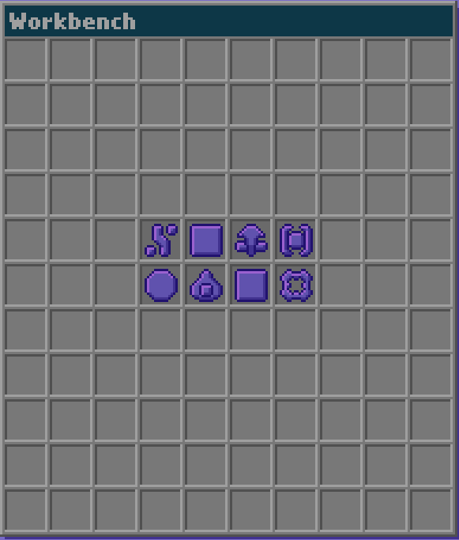
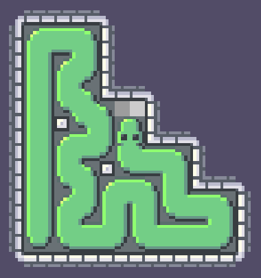
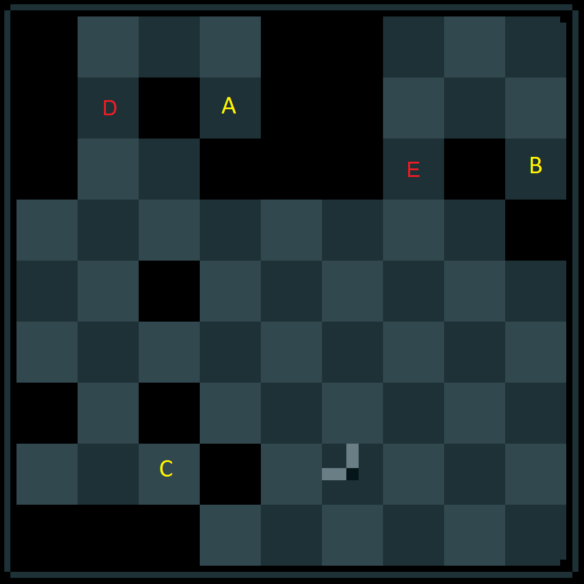

Solution: Holistic
Answer: TRUE FORM
Written by Colin Lu and Nathan Pinsker
This puzzle consists of numerous questions, mostly with multiple choice answers. As the solver works through them, they will find that they are all related to free increpare games. Many of the questions involve new levels for increpare games, while others just involve answering a question about an existing level.
Answering each question gives a piece from increpare's recent game Gestalt_OS. This is relatively easy to find, since it's at the very top of his site (which solvers will presumably get very familiar with over the course of solving the puzzle), and it's also clued by the grids at the bottom, the flavor text, and the title of the puzzle.
With the correct pieces in hand, we place the pieces onto the grid within Gestalt_OS, in the order given by the large grid at the bottom of the puzzle, placing the piece obtained from Question 1 first into the grid at the place indicated by the number 1. Doing this gives the following:

Using the tools image at the bottom of the puzzle to translate these pieces back into letters gives the answer to this puzzle, TRUE FORM. Note that one of the cells contains two letters - in this case, the large letter O is the actual piece, and the small letter T corresponds to the piece emitted by that piece.
Answers to Questions
For some of these questions, a sequence of moves consisting of arrow directions will be provided. These will use U,D,L,R to refer to up, down, left, and right respectively.
Question 1
Correct answer: 1 Symbol: 
This is an instance of the game Parallanagram. There is only one solution to the given level, making the words SERA, POTS, PASS, SOLE.
Question 2
Correct answer: cow Symbol: 
This is a reference to the game Place Animals on the Grid. By playing this game, solvers will find that the only option that can't be placed on the grid (because it just isn't part of the game) is the cow.
Question 3
Correct answer: hula hooper Symbol: 
This question is about the game Quiet City. By playing through the game, solvers will find that all of these characters appear, except for the hula hooper.
Question 4
Correct answer: A and C Symbol: 
This question is about the game Shy Snake. The answer is A and C. One way to see this is to note that since there are two more light squares than dark squares on the grid, and each move covers one light and one dark square. Hence, we must add walls at two light squares. Below is an example solution after adding walls at A and C:
Question 5
Correct answer: (many possible) Symbol: 
This is the same game as increpare's your name, but with a new goal. One possible string of inputs that will enter your name is "yyyyyboouurj njamds[backspace]".
Question 6
Correct answer: 52 Symbol: 
This is increpare's game Participating in Society. The minimum number of moves to complete the level is 52:
Question 7
Correct answer: 5 Symbol: 
This is a Garten der Medusen level. The minimum number of players to complete the level is 5. An example sequence of moves:
Question 8
Correct answer: C only Symbol: 
This is based on increpare's Drehspiel/Rotgame. The player character rotates 90 degrees clockwise with each move, and can only move in one of the directions indicated by the prongs. Only C can be reached. One way to see this is to notice that the character always has one of two orientations while on dark space - either facing left and up, or right and down. Hence, the player will always reach D or E (see figure below) facing down and right, and won't be able to proceed through:
One possible way to reach C:
Question 9
Correct answer: 1 and 3 Symbol: 
These are Pip Schlepper levels. Levels 1 and 3 are solvable, while 2 is not. For level 2, the score on the left side is at least 4, and there can only be three pips on the right side, which isn't sufficient to make 5 points.
Possible solution for level 1:
Possible solution for level 3:
Question 10
Correct answer: 27 Symbol: 
This is a level of newton. The minimum number of moves required is 27:
Question 11
Correct answer: Right cup only Symbol: 
This is increpare's flickgame, Cups. The ball is always in the right cup.
Question 12
Correct answer: 103 Symbol: 
This is a level of Gabelstapler. The minimum number of moves is 103:
Question 13
Correct answer: 1 and 3 Symbol: 
These are new levels of Bring the ice cube to the goal without exposing it to heat. Levels 1 and 3 are solvable, while 2 is not. Level 2 is unsolvable because the only way to move the ice cube "past" whatever move the candle is in is by boxing the candle into a wall, which cannot be done without leaving the "doors" between rooms unblocked (and hence causing the ice cube to melt) when the rooms are this large.
Possible solution for level 1:
Possible solution for level 3:
Author’s Notes
Early in the year, we had the joy of playing through some of increpare's recent work, including games such as Pip Schlepper and Dice Repair Apparat, and came across so many incredible but mostly unknown puzzle games. While we had already explored increpare's most well known game in a 2017 puzzle, we came up with the idea of writing a puzzle based on his collection of incredible smaller puzzle games.
When we discussed the structure of the puzzle, one of increpare's recent games, Gestalt_OS, stood out as a good choice for extraction, and we spent a while trying to come up with a really interesting sequence of moves that would give the right shape of objects for our answer.
We came up with the multiple choice questions as a way to feed in answers for the extraction. We tried to stick with questions that would be solvable if and only the played had understood the fundamental concepts of the corresponding games. To that end, we mostly tried to stray away from "minimum number of moves" questions, but some of the games didn't really lend themselves to multiple questions in any other way.